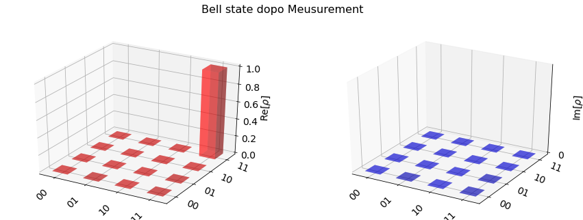

simulator = Aer.get_backend('statevector_simulator')
result = execute(circ, simulator,shots=1024).result()
statevector = result.get_statevector(circ)
plot_state_city(statevector, title='Bell state dopo Meusurement',alpha=0.4, color=['red','blue'])

UnitarySimulator
Con Qiskit Aer possiamo testare la unitary matrix di un circuito quantistico.
UnitarySimulator
Lo UnitarySimulator costruisce la unitary matrix per un Qiskit QuantumCircuit
applicando ogni gate alla identity matrix. Il circuito può contenere solo gates se inseriamo
reset o measure si ha errore.
import numpy as np
from qiskit import QuantumCircuit, QuantumRegister, ClassicalRegister
from qiskit import Aer, execute
from qiskit.providers.aer import UnitarySimulator
qr = QuantumRegister(2)
circ = QuantumCircuit(qr)
circ.h(qr[0])
circ.x(qr[1])
# Select UnitarySimulator
simulator = Aer.get_backend('unitary_simulator')
result = execute(circ, simulator).result()
unitary = result.get_unitary(circ)
print("Circuito unitary simulator:\n", unitary)
Possiamo anche inserire un initial state per l'UnitarySimulator
questa è l'initial unitary matrix ed il risultato si ottiene applicando il circuit unitary all'initial unitary matrix.
qr = QuantumRegister(2)
circ = QuantumCircuit(qr)
circ.iden(qr)